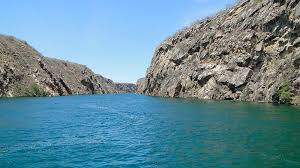
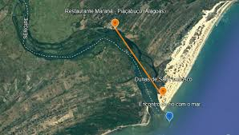

Foz rio São Fracisco
Identificação:
- A Foz do Rio São Francisco fica na divisa dos estados de Alagoas e Sergipe, nos municípios de Piaçabuçu (AL) e Brejo Grande (SE)
- Todo o passeio é realizado no lado alagoano, por Piaçabuçu, onde ficam as dunas e a praia fluvial.
- Piaçabuçu fica 136 km de Maceió e 113 km de Aracaju
- Águas calmas do rio e de temperatura agradável numa área que fica uns 500 metros antes do encontro com o mar.
Histórico:
A Foz do Rio São Francisco é o ponto onde o famoso "Velho Chico" encontra o oceano Atlântico, formando uma paisagem deslumbrante que marca a união entre o rio e o mar. Localizada no estado de Alagoas, essa região tem grande importância histórica, cultural e ambiental. Ao longo dos séculos, o Rio São Francisco desempenhou um papel vital no desenvolvimento da região Nordeste, sendo uma importante via de transporte e fonte de água para diversas comunidades.
A foz do São Francisco também é rica em biodiversidade, abrigando uma variedade de espécies tanto no rio quanto na vegetação que cerca o local. Além disso, a área é um destino turístico em crescimento, atraindo visitantes que buscam conhecer a beleza natural do encontro do rio com o mar, suas praias isoladas e as águas tranquilas do delta. A região também é um símbolo da luta pelo cuidado ambiental, sendo um ponto de destaque para a preservação de ecossistemas frágeis e para o debate sobre o futuro do rio, que enfrenta desafios relacionados à poluição e à diminuição de seu volume de água.

Dicas de atrações para fazer com a familia:
- Passeio do rio: Durante o passeio, se pode ver as belas paisagens das matas nativas às margens do rio, composta especialmente por coqueirais e palmeiras, além de belos manguezais, com diferentes perspectivas conforme a altura da maré.
- Praia fluvial da Foz do Rio São Francisco: A Praia fluvial da Foz do Rio São Francisco fica no lado de Alagoas, junto às dunas. O local proporciona um agradável banho nas águas calmas do rio e de temperatura agradável numa área que fica uns 500 metros antes do encontro com o mar.
- Dunas da Foz do Rio São Francisco: O lado de Alagoas onde o rio se encontra com o mar possui uma grande área de dunas que varia de 1,5 a 2,5 km de largura e tem uma extensão de 17 km desde a foz até o Pontal do Peba.
- Artesanato e gastronomia: Apesar de ser um lugar isolado, sem qualquer construção, há uma boa infraestrutura rústica no local, já que recebe um bom número de visitantes diários. Há barracas com comidas e bebidas, venda de artesanatos e de cocadas deliciosas de sabores variados.
Mapa do passeio de barco à Foz do Rio São Francisco
